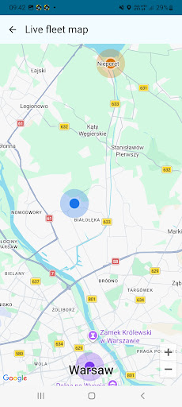
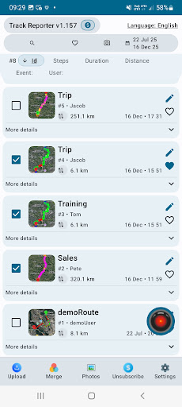
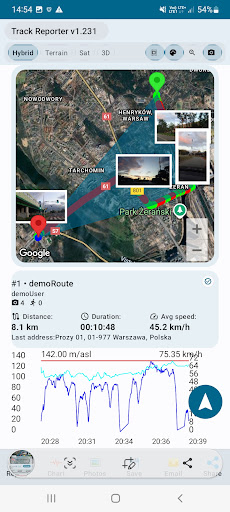

Track Reporter provides GPS fleet monitoring for small businesses that coordinate people working at multiple locations. Managers can see participating members on a live map and review shared route history and photos after visits. It is designed for field operations, not vehicle engine diagnostics or fuel management.
See shared live locations
A team member signs in with Google and enables location sharing on Android. Authorized fleet administrators can then see the current shared position. This helps a dispatcher understand who is near a job site or whether a team is still traveling. Live updates require an internet connection and an active sharing session; tracking is controlled by the member.

Review completed routes
After workers share their recorded sessions with the fleet, managers can review completed journeys in the browser and select several routes for comparison. The history gives supervisors useful context for recurring maintenance rounds, delivery routes and visits to customer properties. The live map shows current positions; detailed completed tracks are reviewed separately.

Connect routes with photo evidence
A GPS position shows where a device was located, not what work was performed. Photos associated with recorded sessions help document site conditions, inspected assets and completed tasks. Review the route, time and photographs together rather than relying on a location marker alone.

Explore the web demo
Open the interactive 3D sample route to inspect the map, playback controls, timeline and photographs. The demo does not require fleet sign-in and shows recorded sample data, not live employee locations.
Open the interactive 3D demo ↗
Set up your field team
- Install Track Reporter on Android.
- Sign in with Google and create or join a fleet.
- Invite the relevant team members and grant appropriate access.
- Have workers enable sharing during field activity. Review completed routes and Work Orders through the fleet workflow.
Frequently asked questions
Does route recording require internet access?
Basic GPS recording can continue offline. Live location sharing and online synchronization require connectivity.
Does Track Reporter require vehicle hardware?
No. Field workers use Android devices; authorized managers can review shared information in a browser.
Document your next field assignment.
Record routes, capture evidence and manage field work.